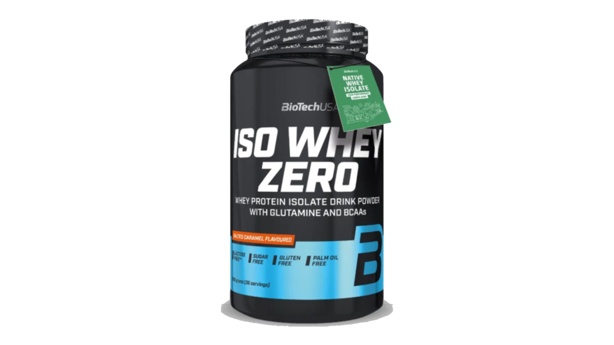

En stockIso Whey Zero - Salted Caramel (908 g)
Description
78,50 €
Iso Whey Zero Salted Caramel associe un isolat de protéine de lactosérum de qualité supérieure à une délicieuse saveur caramel salé. Sa formule est pensée pour les sportifs recherchant une protéine riche, facilement assimilable et pauvre en sucres.
Sa texture onctueuse et sa dissolution rapide permettent de préparer un shaker agréable après chaque séance d'entraînement ou à tout moment de la journée.
- Isolat de protéine de lactosérum.
- Faible teneur en sucres et matières grasses.
- Riche en protéines.
- Excellente solubilité.
- Format 908 g.
A savoir
Utilisation suggérée
Mélanger une portion avec environ 200 à 300 ml d'eau ou de lait. À consommer après l'entraînement ou en complément de vos apports protéiques quotidiens.